Biotechnology Co., Ltd.")


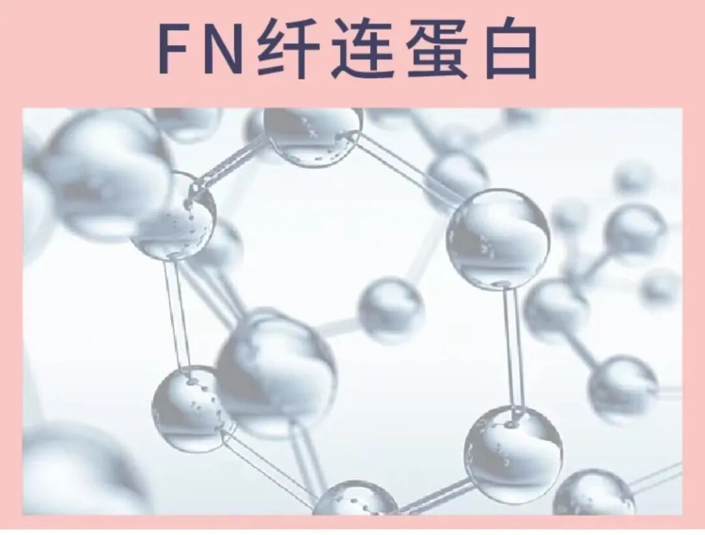
New Arrival
Fibronectin
to
one papers bringing on
enhance to “Fibronectin”， association to it is A Novel Protein， to can Collagen。
such as is Ingredients one it is A Novel Cosmetic Raw MaterialsIngredients， major multi- ，for “Fibronectin” certification in 。
，As a A Novel “ science Ingredients” 。
from type while ， in on 70years generation been USAScientists 。
Chinawhile ， on 80years generation been ChinaScientists ， active Cellular、Repair Cellular、 Cellular、 Cellular biosubstance science applied 。
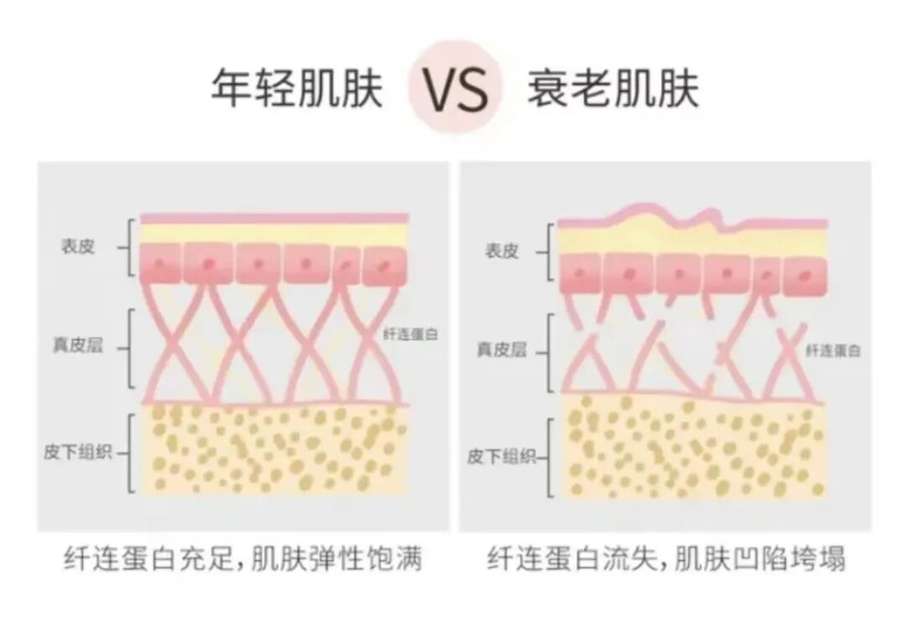
major Industry” high science Ingredients“ “ science ”——Fibronectin
Fibronectin，Fibronectin， FN， and Collagen in Protein， is by Cellular become “ ”。
FNby and cell biologybecome ， in in substance and solution in ，is A Novel major moleculesProtein，by units become ， in C two ， units molecules V ，molecules in 440-450KDa（ EGF major multi-multi-，EGFmolecules for 6KDa）。this Protein Cellular bioRepair biosubstance science can ， in medical on applied ， in Repair、 、Cellular and others one applied 。

science resolve
Fibronectin enhance EGF（ Peptide-1）
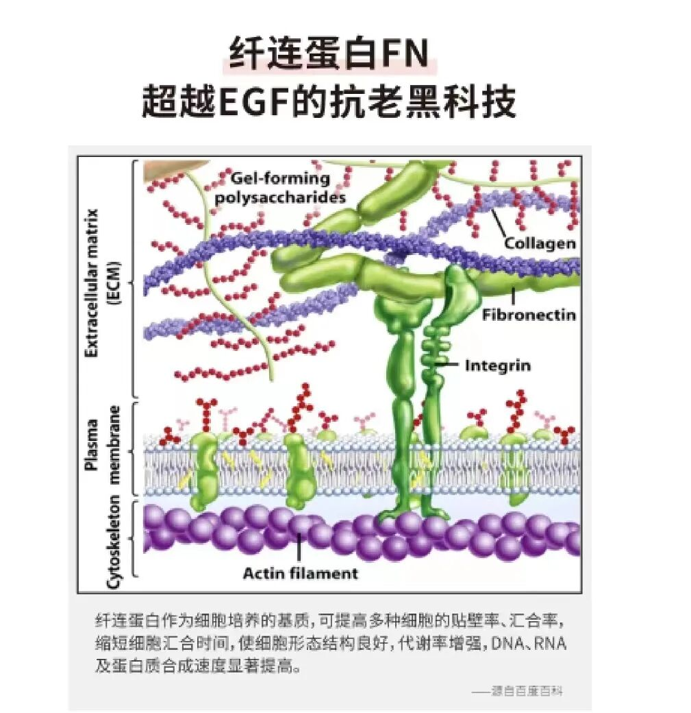
in FN ，been medical science one certification can Promoting cell biology and Cellularrestoring Ingredients，oneis EGF（ Peptide-1）， by in it association Cellular ， in one ， in 2019years been NMPA applied 。
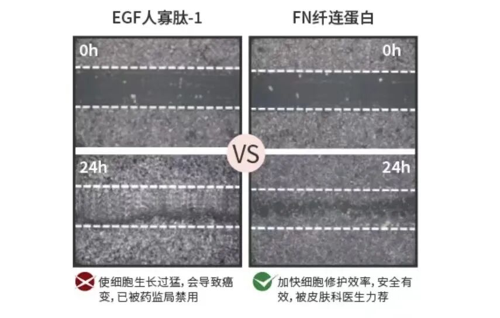
EGFbeen ，Fibronectin from oneunits Market ，Technology high EfficacyIngredients coming to using and scholar recombinant and 。
via 10 years testing ，Scientists one can generation EGF， for safety full Ingredients——Fibronectin（ FN），via ScientistsExperimentvalidation： Cellular in FN ，generation ， 、 。
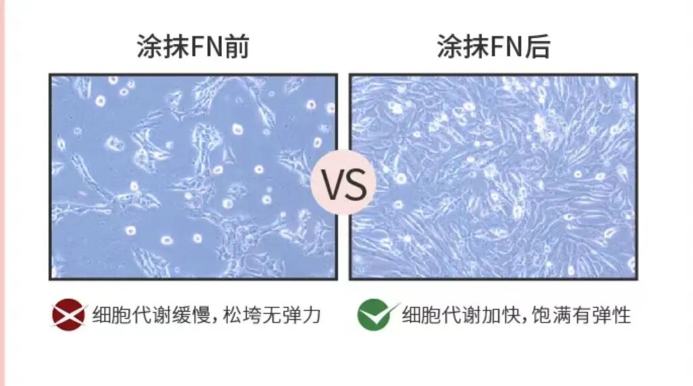
Fibronectin（FN） applied in in Efficacy？
such as EGF is one ， Cellularnew bio ， can can association “ “ 。
while FN is Repair process in “major Boss”, Repair to “items ” ，FN from “ ”，FN is coming Promoting ，Moreis from units ！ its is “ ” skin new bio、Repair、 manager ， enabling Cellular bio 。 major boss ！
“major boss”Fibronectin can
for from Repairand recombinant applied 。
① ——Promoting Cellularproduction bio substances(Collagen、 、 molecules and others)，Promoting new generation 。
②Repair——FNAs a cell biology ，can Cellular ， Cellular ，generation 。
1、 Cellular
2、Promoting Cellular
3、 applied
4、 promoting cellular proliferation、Cellular applied
its realize ， in Industryin ，from substance ， in biosubstance 。
biosubstance is applied generation moleculesbiosubstance science、 science、cell biologysubstance science、Proteins process and otherssciencescience researchbecome ， Naturalbiomanager process ， Cellular from Repaircan ， to Efficacy。
Cellularfrom Repaircan Ingredientsis molecules，it in micro ， Bioactivity high ，for multi- cell biologymanager can and generation active biosubstance applied ，from on manager and 。
Fibronectin（FN） applied
in in applied ：
1. source （ in coming in ），skin safety
2. can
3. Repair ，Soothing
4. Gently 、 can applied Sensitivityskin 、Acneskin （ can Repair ）, items applied ，Repair genuine grade ！
Fibronectin Products in applied ，from units coming ， in for become ！
Productsmajor can using 、 and others 。
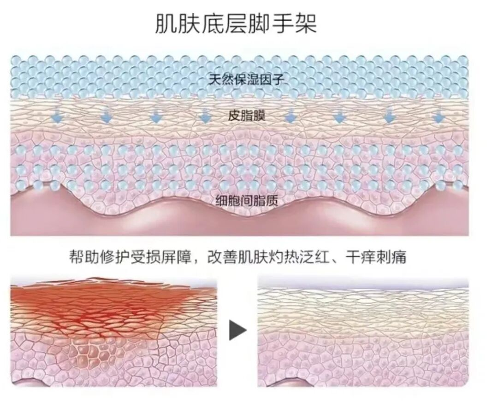
Arrives
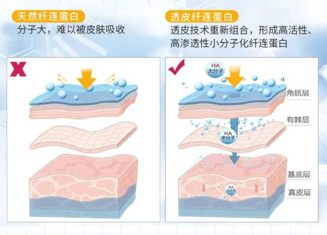
natural Fibronectinmolecules major （45 molecules ） 。this Fibronectin in sector applied 。
EGFone ， to Fibronectin major molecules ，can Transdermal is Scientists science recombinant 。
is scholar Fibronectin Efficacyis 。
Innovation
Ingredients
Fibronectin
while is ！Mellgen Biotech ， resolve ， in 2019years “Transdermal Fibronectin” Patented Technologies 2019“ten major InnovationIngredients” ， “Advanced Unit of China Sci-Tech Innovation”。
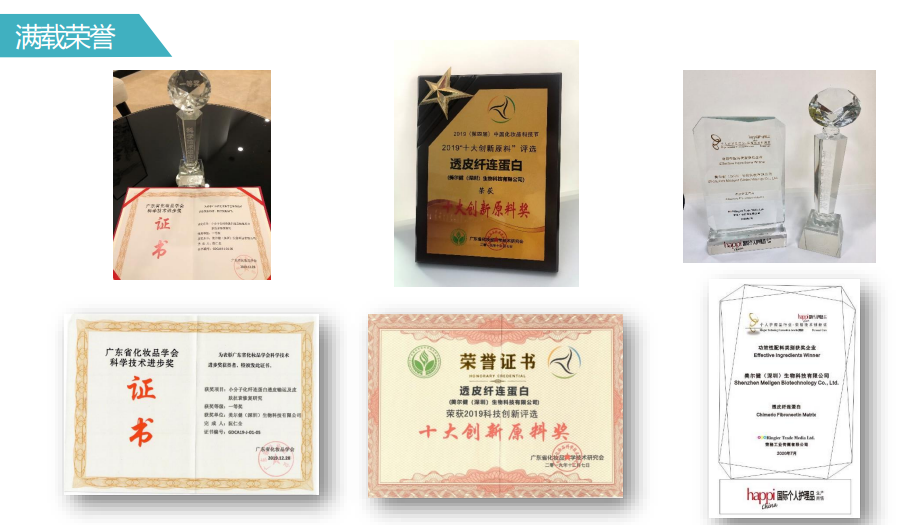
●
Fibronectin（Transdermal Type ）MELLPRO®-500
Invention Patents ：ZL201910388775.3
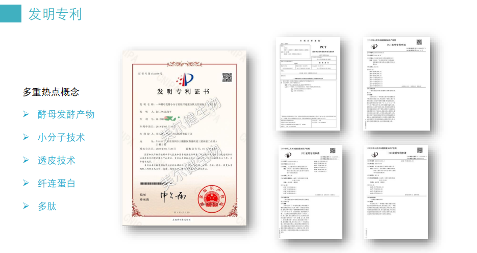
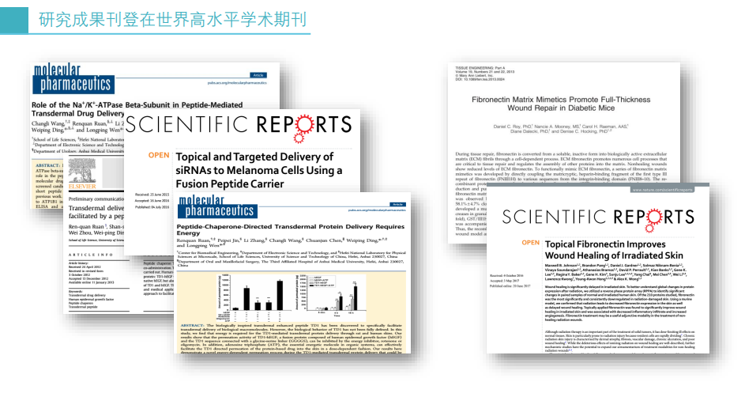
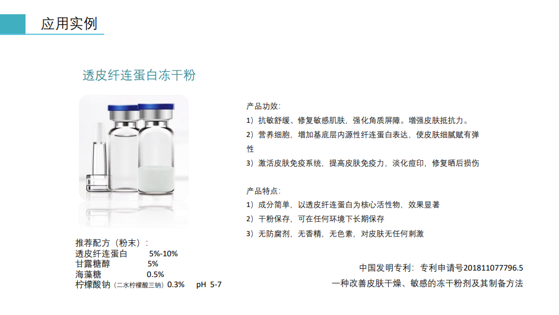
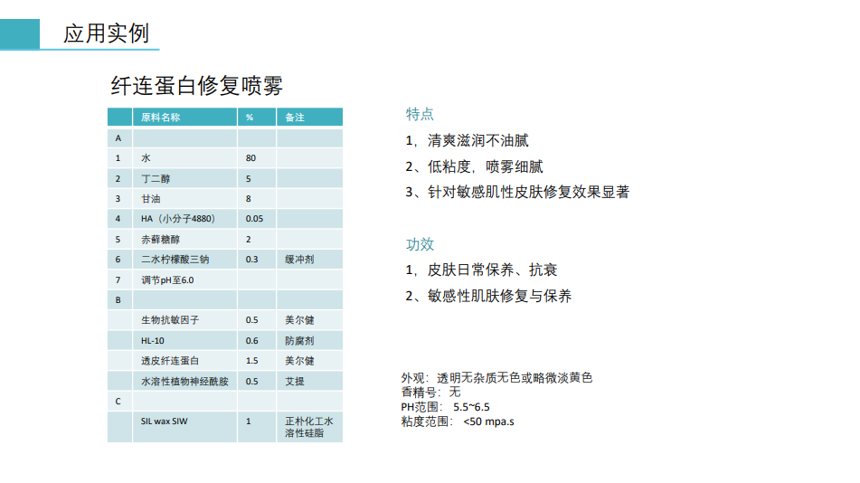
can using is ， coming association can EfficacyType Ingredientsbeen applied in Productsin 。
certification to ，EfficacyProducts in science science on ， genuine Market 。
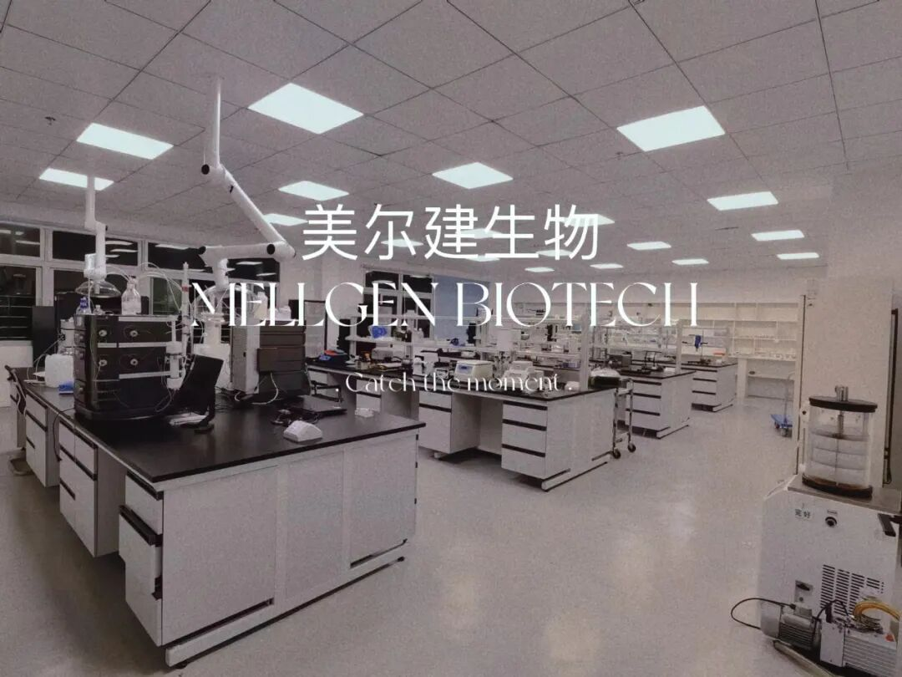
Transdermal Fibronectin “ bio “
——Mellgen BiotechLaboratory
（Mellgen Biotech Lab）
Here bioproduction
for biosubstance Technology
for science
for science for
Mellgen Biotech
located in major
biosubstance
can from science in using
EfficacyIngredients in
for IngredientsExploring
Mellgen Biotech in
source while
Every single one coming
coming multi-
is x and period
EfficacyType Raw Material Products major
coming coming
Mellgen Biotech Ingredients
from “Transdermal Fibronectin” scholar to scholar
Biological Transdermal Technology high
China Ingredients
Mellgen BiotechR&D Team
integrating become for A Novel
enabling
， one
Mellgen Biotech
coming can period
science and
END
· · · · · ·
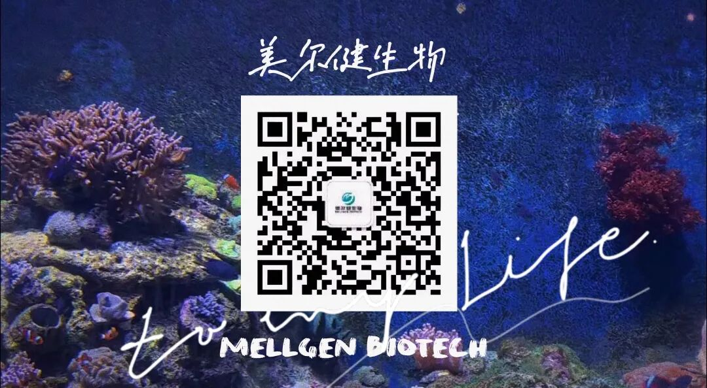
▻▻▻